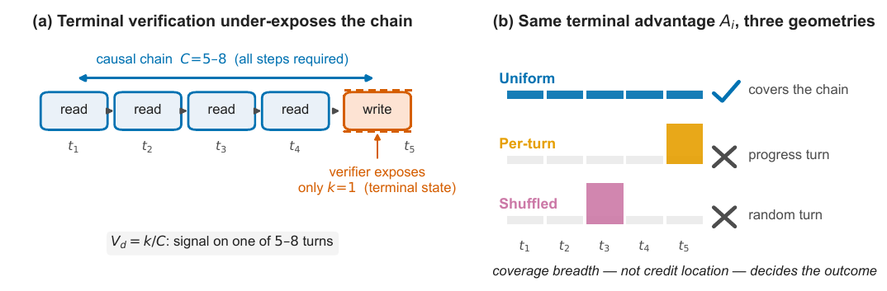
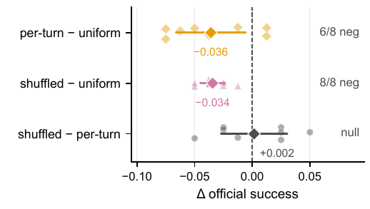
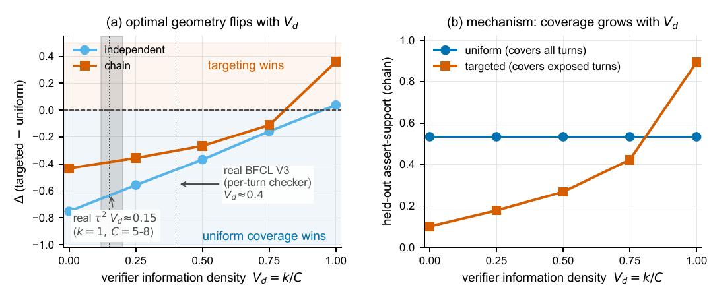

TL;DR — sous vérifieur terminal, l'axe nuisible du credit assignment multi-turn n'est pas où le crédit est placé mais à quel point il est concentré ; une grandeur structurelle V_d = k/C (fraction de la chaîne causale dont le vérifieur expose la correction par tour) prédit le régime, et les vérifieurs d'état terminal y sont structurellement bloqués bas (V_d ≤ write-fraction).
Claim principal, précisément : dans des comparaisons shared-rollout (même batch de rollouts, même optimiseur, même masse de crédit ∑_t|a_t| = |A_i|), redistribuer le même avantage terminal group-normalized (a) uniformément sur tous les tours bat (b) le reward binaire 0/1 de +0.079 d'assert-support (4/5 seeds, Wilcoxon une-queue p=0.003 sur 95 paires tâche-seed) [§3, Tab. 1] et bat (c) sa concentration sur les tours de progrès de +0.053 (5/5) [§3, Tab. 1] ; et (d) permuter cette même concentration sur des tours aléatoires ne la dégrade pas (shuffled − per-turn = +0.014, CI 95 % [−0.07, +0.10] sur tau2 ; +0.002, CI ⊂ ±0.031 sur BFCL ; +0.014, CI 90 % ⊂ ±0.037 sur ToolACE) [§4, §6, Tab. 8] — donc le ciblage est du second ordre tant que V_d < V_d* ≈ 0.81, seuil établi dans le toy seulement [§5.3].
⚠️ Portée réelle plus étroite que l'abstract : toutes les comparaisons sur vrai modèle isolent la première mise à jour de politique ; « longer-horizon training dynamics are outside the scope » [§8]. Le papier compare des géométries de crédit, pas des runs d'entraînement.
retail [cit. tau2] restreint à ses tâches « pure database-state » (le vérifieur ne contrôle que des champs DB, aucune assertion jugée en langage naturel) [§2] ; tau2-bench telecom comme contraste de progrès partiel [§6] ; BFCL V3 multi-turn [cit. bfcl] comme second benchmark ; un env synthétique maison pour la frontière de phase [App. C].V_d), groupe G=24, 400 steps [App. C].|G_q| ≥ 2 (au moins 2 changements DB gold, champs créés inclus), qui sélectionne exactement les IDs held-out 1, 9, 11, 22, 30, 49, 56, 73, 74, 75, 81, 85, 86, 90, 91, 93, 94, 98, 100 [App. E]. Le sous-ensemble d'entraînement ToolACE est choisi par le même « model-specific variance screen » que Qwen3 (pas de filtrage par pass@k explicite ; critères d'éligibilité pré-enregistrés : validité du parser 0.556, succès d'entraînement non dégénéré 0.281, parité des dynamiques d'update 0.996) [§6 note 2]. Pas de filtrage par pass@k du modèle de base documenté.C = 5–8 étapes causales (médiane 8 appels [6, 11.25] ; 6 outils distincts [4.75, 6.25] ; 6 ancêtres de provenance [3.75, 7.25]) [Tab. 6]. Horizon maximal non précisé. Longueur de séquence max à l'entraînement 8 000 tokens [Tab. 5]. Gestion du contexte long : non précisé (pas de troncature/résumé/mémoire décrits).Les 4 bras (noms du harnais, recopiés) [§2 note 1] :
| Bras | Nom harnais | Reward | Allocation de l'avantage |
|---|---|---|---|
| Binary | official |
0/1 outcome | — |
| Uniform | dense_full |
DB-field progress continu | a_t = A_i sur chaque tour (allocation GRPO standard) |
| Per-turn | dense_perturn |
idem | A_i redistribué selon la part de progrès DB positif ΔS_t de chaque tour, ∑_t a_t = A_i |
| Shuffled | dense_perturn_shuf |
idem | les mêmes poids per-turn permutés sur des tours aléatoires (concentration identique, information de ciblage retirée) |
Un clip global de norme de gradient à 1.0, saturé à chaque epoch loggé de chaque bras, égalise la magnitude de l'update : les bras diffèrent en direction, pas en taille [§2].
V_d ≈ 0.4 [§6].official), continu (fraction de champs DB gold corrects), ternaire (0 / 0.5 / 1). Crédit partiel : oui pour les bras denses. Agrégation formelle de l'assert-support held-out [App. E] :M_q = {k ∈ dom(d_q^0) ∩ dom(d_q^*) : d_q^0(k) ≠ d_q^*(k)} (champs existants modifiés par le gold) ;S_saqj = (1/|M_q|) ∑_{k∈M_q} 1[d̂_saqj(k) = d_q^*(k)], une clé prédite manquante étant lue à sa valeur initiale ; si M_q est vide, repli sur l'outcome binaire officiel ;V_d ≤ write-fraction (vérifieur à transition d'état, sans label oracle ni juge appris) [Éq. 1, §5.4] : un read renvoie de l'information sans delta d'état, donc sa correction relative au but est invisible — « read/exploration steps are a permanent structural blind spot ».A_i (GRPO), redistribué selon le bras, avec ∑_t|a_t| = |A_i| imposé à la précision numérique dans le sweep budget-matched [App. G].Aucun cas de reward hacking rapporté, et c'est crédible : le reward est un diff d'état DB contre un gold rejoué, sans juge ni terme de style à exploiter, et surtout un seul pas de gradient — un hacking a besoin d'un entraînement prolongé pour émerger. L'absence est donc attendue, pas rassurante : le papier ne peut structurellement pas en observer.
Ce que le papier documente en revanche, ce sont des failure modes du credit assignment et de la mesure :
| Comportement | Détection | Correction |
|---|---|---|
| Le reward binaire 0/1 dégrade la politique de base (4/5 seeds, −0.038 d'assert-support, et sur succès officiel per-turn tombe 2.7 pp sous la base non entraînée) [§3, Tab. 1, Tab. 7] | Comparaison appariée au modèle de base évalué dans les mêmes batches | Reward dense (même ternaire : 96 % du gain conservé, +0.076, 5/5) → groupes non dégénérés [§3] |
| Concentration du crédit sur les tours de progrès : −0.053 d'assert-support (0/5 seeds), −0.063 de succès officiel (4/5, un ex æquo) [§3, Tab. 7] | Shared-rollout, même A_i, même masse |
Étalement uniforme = défaut zéro-information [§5.5] |
Effondrement du signal observable à k = 1 dans 98 % des rollouts, sur le write DB terminal batché, alors que C = 5–8 |
Participation ratio des poids ΔS + data-flow statique : dans 100 % des rollouts réussis les arguments du write terminal (order, item, product ids) sont des valeurs renvoyées par les reads précurseurs ; 72 des 76 identifiants uniques consommés (94.7 %) n'apparaissent pas dans l'instruction utilisateur [§5.2, App. F] |
Aucune correction bon marché : les deux seules constructions qui remontent V_d à C fixe injectent de la connaissance oracle, et aucune ne reproduit le crossover du toy sur Qwen3-8B [§5.3] |
| Plancher de capacité : 4B null (chaîne complétée dans 24 % des rollouts), Llama-3.1-8B null (2 % de succès de base, groupes quasi sans variance) | Diagnostic de complétion de chaîne [Fig. 5a] | Aucune — présenté comme une prédiction du compte coverage, pas un échec de réplication [§6] |
« Traverse mais ne consomme pas » : Llama-3.1-8B parcourt la même chaîne (C = 5–8) mais seuls 50 % des arguments de son write terminal viennent de ses reads précurseurs (vs 100 % pour le Qwen au-dessus du plancher) ; Llama-3.3-70B 0/32 avec la même signature malgré 81 % d'appels bien formés [§6] |
Analyse de provenance data-flow | Non résolu — « scale alone does not fix this grounding deficit » |
| Porte de résolution : sur telecom, matériel intermédiaire trop mince pour séparer les bras → null [§6] | — | — |
| Instabilité de l'évaluation elle-même : même adaptateur, même jeu de tâches, batch frais → ±0.04 à ±0.16 par seed [App. B] | Triple ré-évaluation des mêmes adaptateurs | Tous les contrastes confirmatoires passés en within-run paired (mêmes rollouts d'entraînement, même batch d'éval) ✅ |
Comportement émergent inattendu (positif) : le bras shuffled — permuter le crédit sur des tours aléatoires — ne coûte rien par rapport au ciblage par progrès. C'est le résultat central et il est contre-intuitif ; les auteurs l'interprètent comme la preuve directe que « the per-turn deficit is not a mis-targeting failure that sharper localization could repair » [§4].
| Chiffre annoncé | Où il est annoncé | Source dans le papier | Verdict |
|---|---|---|---|
| Dense uniform > binaire, reward binaire « net-harmful on 4/5 seeds » | abstract, §1 | Tab. 1 : uniform 0.563 vs binaire 0.484 → +0.079 ; binaire vs base par seed 0.545/0.597, 0.447/0.502, 0.539/0.509, 0.439/0.506, 0.449/0.496 → dégrade sur 4/5 | confirmé |
| +0.079, Wilcoxon une-queue p=0.003 sur 95 paires, bootstrap CI [+0.009, +0.149] | §3 | Tab. 1 + App. B (bootstrap hiérarchique seed-puis-tâche, 20 000 réplicats, moyenne +0.0789, CI [+0.0085, +0.1492]) | confirmé |
| « by +5.2pp on official success » (écart binaire−uniform) | §3, légende Tab. 1 | Aucune table de succès officiel ne contient de ligne binaire : Tab. 7 ne donne que base / uniform / per-turn | introuvable (affirmé deux fois, jamais tabulé ni ventilé par seed) |
| Ternaire retient 96 % de l'avantage (+0.076, 5/5) | §3 | Tab. 1 : ternaire 0.560 vs uniform 0.563 (Δ −0.003) ; 0.560 − 0.484 = +0.076 vs binaire ; le « 5/5 » n'est pas ventilé | confirmé (le 96 % = 0.076/0.079) |
| Per-turn < uniform, −0.053 (0/5 seeds) | §3 | Tab. 1 : per-turn 0.510 vs 0.563 | confirmé |
| Déficit reproduit sur le succès officiel, −0.063 (t=−2.80, 4/5 négatifs, un ex æquo) | §3, Tab. 2 | Tab. 7 : uniform 0.403, per-turn 0.340, Δ par seed −0.05/0.00/−0.13/−0.10/−0.04 | confirmé |
| Shuffled ≈ per-turn : « equally harmful », ciblage de second ordre | abstract, §1, §4 | §4 : +0.014, CI 95 % [−0.07, +0.10] sur 4 seeds — le papier écrit lui-même « This is a null on targeting, not a certified equivalence » | sur-généralisé sur tau2 : la CI (±~0.09) est plus large que le déficit de concentration qu'elle doit exclure (−0.052) → le null tau2 seul n'exclut rien. Correctement établi en revanche sur BFCL (CI ⊂ ±0.031 < déficit 0.036) et ToolACE (CI 90 % ⊂ ±0.037) |
k = 1 dans 98 % des rollouts |
abstract, §1, §5.2 | §5.2, participation ratio des poids ΔS, médiane k = 1.00 ; les 2 % multi-turn « ne déplacent pas le régime » |
confirmé, mais taille d'échantillon non précisée pour ce 98 % (App. F ne donne n=16 que pour C) |
C = 5–8 (médiane 8 actions, 5 outils distincts) |
abstract, §5.2 | Tab. 6 sur 16 rollouts de succès officiel : appels exécutés 8 [6, 11.25] → V_d 0.125 ; outils distincts 6 [4.75, 6.25] → 0.167 ; ancêtres de provenance 6 [3.75, 7.25] → 0.167 |
confirmé (robuste à 3 définitions), ⚠️ n=16 |
Crossover synthétique V_d* ≈ 0.8 |
abstract, §1 | §5.3 : chaîne state-dependent, gap targeted−uniform = −0.43, −0.36, −0.27, −0.11, +0.36 pour V_d = 0…1 (32 seeds appariés), zéro à V_d* ≈ 0.81 ; [0.75, 0.91] en balayant C = 4–10 ; [0.79, 0.88] en variant largeur et K [App. C] ; ≈ 0.95 sur chaîne à tours indépendants |
confirmé — mais synthétique uniquement : §5.3 reconnaît que ni l'exposition de la correction des reads gold ni l'injection des ids prérequis ne reproduit le crossover sur Qwen3-8B |
V_d ≈ 0.15 sur tau2, ≈ 0.4 sur BFCL V3 |
abstract | §5.2, §6, Tab. 3 (2 points mesurés sur 8 benchmarks du census ; les autres sont « from scoring code » ou « low (structural) », non mesurés) | confirmé pour les 2 mesurés ; le census lui-même est analytique, et le papier l'étiquette honnêtement |
| « uniform also wins on BFCL », shuffled négatif 8/8 | abstract | §6 : per-turn−uniform −0.036 (t=−2.80, p=0.027, 6/8) ; shuffled−uniform −0.034 (8/8, t=−7.5, p<0.001) ; shuffled−per-turn +0.002 | confirmé pour « uniform > concentration » ; sur-généralisé si lu comme « dense > binaire » — il n'y a pas de bras binaire sur BFCL |
| ToolACE-2-8B : Δ = −0.048 sur « 32 pre-registered seeds » | abstract | §6 : jeu principal pré-enregistré 8 seeds Δ=−0.034, t=−2.20, CI [−0.071, +0.003] qui inclut zéro → puis réplication 4 seeds (−0.044, t=−2.65) → puis réplication 20 seeds (−0.054, t=−5.73, CI [−0.073, −0.034], 18/20) → pool 32 seeds −0.048 (t=−6.54, CI [−0.063, −0.033], 29/32) | confirmé arithmétiquement, mais sur-généralisé dans la formulation : les « 32 seeds » sont un pool séquentiel de trois campagnes dont la primaire est nulle ; l'abstract ne le dit pas, le corps le dit (✅ transparence du corps) |
| « an independent 20-seed replication is itself significant » (−0.054) | abstract | §6, idem | confirmé |
| Dose-response monotone, « deficit vanishes only at full chain coverage » | abstract, §6 | Tab. 8 vs all-turns-normalized : spike (k=1) −0.048 (t=−7.84, 18/20) → checker-visible (k≈3) −0.017 (t=−1.76, non significatif) → all tool calls (k≈5–6) +0.010 (CI [−0.007, +0.027]) ; pas adjacents +0.031 (t=3.12) et +0.027 (t=3.05) | confirmé sur la monotonie et les pas adjacents ; légèrement sur-généralisé sur « only at full coverage » — à k≈3 le déficit n'est déjà plus significatif (t=−1.76) |
| « a reward-to-go arm reaching full-coverage parity » | abstract, §6 | App. G, BFCL Qwen3-8B, 5 seeds : RTG = meilleur des 8 bras (0.340), +0.025 vs all-turns-normalized CI [−0.019, +0.069], +0.045 vs concentration checker-visible (CI [+0.003, +0.087]) | sur-généralisé : la « parité » est un null sous-puissancé à n=5 (CI large de ±0.044), présenté comme une prédiction confirmée |
| « algorithm-agnostic (GRPO, advantage-baseline, REINFORCE) » | §1, §5.1 | App. C — vrai dans le toy seulement ; le vrai modèle n'est entraîné qu'en GRPO | sur-généralisé (réglage synthétique uniquement, mais le papier le localise bien en §5.1) |
| Effet « holds within Qwen3 (8B and 14B) » | abstract | §6 : dense>binaire +0.048 (3/3) à 8B et +0.079 à 14B ; per-turn−uniform −0.050 (2/3) à 8B et −0.053 (5/5) à 14B | confirmé, ⚠️ 3 seeds à 8B et 2/3 seulement sur la géométrie |
Bilan 7.0 : aucune contradiction numérique — tous les chiffres de l'abstract se retrouvent dans le corps ou les annexes, et le corps est souvent plus prudent que l'abstract (« a null on targeting, not a certified equivalence »). Trois sur-généralisations de présentation : (i) le ciblage « equally harmful » repose sur tau2 à 4 seeds dont la CI est plus large que l'effet, le vrai appui étant BFCL/ToolACE ; (ii) les « 32 pre-registered seeds » masquent une primaire nulle et un ajout séquentiel ; (iii) la « parité » du reward-to-go est un null à 5 seeds. Un chiffre introuvable : le −5.2 pp binaire−uniform sur succès officiel, jamais tabulé.
| Comparaison | Benchmark / modèle | Δ | n seeds | Stat |
|---|---|---|---|---|
| uniform − binaire | tau2 retail-14B, assert-support | +0.079 | 5 (4/5) | Wilcoxon p=0.003 (95 paires) ; CI [+0.009, +0.149] |
| uniform − base | tau2 retail-14B | +0.041 | 5 (4/5) | — |
| binaire − base | tau2 retail-14B | −0.038 | 5 (4/5 dégradent) | — |
| ternaire − uniform | tau2 retail-14B | −0.003 | 5 | indistinguable |
| per-turn − uniform | tau2 retail-14B, assert-support | −0.053 | 5 (0/5) | — |
| per-turn − uniform | tau2 retail-14B, succès officiel | −0.063 | 5 (4/5, 1 ex æquo) | t=−2.80 |
| shuffled − per-turn | tau2 retail-14B | +0.014 | 4 | CI [−0.07, +0.10] → null sous-puissancé |
| per-turn − uniform | BFCL V3, Qwen3-8B, succès officiel | −0.036 | 8 (6/8) | t=−2.80, p=0.027 |
| shuffled − uniform | BFCL V3, Qwen3-8B | −0.034 | 8 (8/8) | t=−7.5, p<0.001 |
| shuffled − per-turn | BFCL V3, Qwen3-8B | +0.002 | 8 | CI ⊂ ±0.031 (< déficit) |
| concentré − uniform | BFCL V3, ToolACE-2-8B | −0.048 (pool) | 32 (29/32) | t=−6.54, CI [−0.063, −0.033] |
| spike (k=1) − all-turns-norm | ToolACE breadth | −0.048 | 20 (18/20) | t=−7.84 |
| checker-visible (k≈3) − all-turns-norm | ToolACE breadth | −0.017 | 20 | t=−1.76 (n.s.) |
| all tool calls (k≈5–6) − all-turns-norm | ToolACE breadth | +0.010 | 20 | CI [−0.007, +0.027] |
| shuffled (k≈3) − checker-visible (k≈3) | ToolACE breadth | +0.014 | 20 | CI 90 % ⊂ ±0.037 |
| checker-visible à 2× LR − uniform | ToolACE breadth | −0.024 | 20 | t=−2.70 (KL 0.60 vs 0.006) |
| reward-to-go − all-turns-norm | BFCL Qwen3-8B | +0.025 | 5 | CI [−0.019, +0.069] |
C ≤ k) [§5.1].
2. La densité : nécessaire mais grossière — le ternaire suffit (96 % du gain) [§3], donc le gain vient de la non-dégénérescence des groupes (0.65 → 0.90 de groupes à variance non nulle) [App. D], pas de la finesse du reward.
3. Le ciblage : ne compte pas, dans ce régime — contrôle shuffled sur 3 réglages indépendants.
4. Pas l'échelle d'update : clip de norme saturé, KL apparié, clipping PPO inactif, et le bras 2× LR (KL ×100) reste sous uniform [App. D, Tab. 8].
5. Pas la variance de gradient par token : le toy montre que la concentration gagne à C ≤ k malgré une variance par update plus élevée [§8].C = 4–10, T = 12/24/48, largeur 8/16/32, K = 5/10/20 [§5.3, App. C].∑|a_t| = |A_i|, clip saturé, KL apparié. L'appariement est le meilleur que j'aie vu sur ce type de question.ΔS structurelle maison. Le papier le reconnaît et reformule sa portée (§7 : les méthodes apprises « raise an effective, data-driven V_d … distinct from the structural V_d swept »), mais l'abstract ne porte pas cette nuance.V_d, check algorithm-agnostic.V_d de la Fig. 4 malgré « 32 paired seeds ».0.513 − 0.510 ≠ +0.014 (shuffled n'a que 4 seeds, la moyenne per-turn sur ces 4 seeds est 0.499). Ce genre de note est un signal de sérieux.V_d est une construction synthétique dont le crossover n'a jamais été reproduit sur un vrai modèle. Et tout repose sur un unique pas de gradient.
Ce qu'il faut voir : le schéma du mécanisme en deux panneaux. (a) read → read → read → read → write : la chaîne causaleC = 5–8 est entièrement requise, mais le vérifieur n'expose que le write terminal (k = 1), d'où « signal on one of 5–8 turns ». (b) le même avantage terminal A_i sous trois géométries — Uniform s'étale sur les 5 tours (✓ couvre la chaîne), Per-turn met tout sur le tour de progrès, Shuffled met tout sur un tour aléatoire (✗ tous deux). C'est l'argument central en une image : les deux bras concentrés sont visuellement interchangeables, et c'est exactement ce que les données montrent.

Ce qu'il faut voir : trois contrastes appariés par seed sur le succès officiel. per-turn − uniform = −0.036 (6/8 négatifs) et shuffled − uniform = −0.034 (8/8 négatifs, barre d'erreur très serrée) sont tous deux clairement à gauche de zéro ; shuffled − per-turn = +0.002, étiqueté « null », avec un intervalle qui chevauche largement zéro et reste plus étroit que les deux déficits au-dessus. C'est la pièce à conviction de la mission de vérification : le contrôle de permutation existe, à concentration appariée par construction, et son null est ici mieux dimensionné que l'effet qu'il doit exclure — contrairement à la version tau2 (4 seeds, CI ±0.09).
Ce qu'il faut voir : (a) le gap targeted − uniform monte monotonement avecV_d et ne croise zéro qu'à V_d* ≈ 0.81 (chaîne state-dependent) ou ≈ 0.95 (tours indépendants) ; les deux points réels mesurés — tau2 à 0.15 et BFCL V3 à 0.4 — sont annotés loin dans la zone bleue « uniform coverage wins ». (b) le mécanisme : le bras ciblé monte de 0.10 à 0.89 purement parce que sa couverture croît avec V_d, tandis qu'uniform reste plat à 0.53. ⚠️ À lire comme ce que c'est : une courbe synthétique, sans barres d'erreur visibles malgré 32 seeds appariés, et dont le crossover n'a pas été reproduit sur vrai modèle [§5.3]. C'est le maillon faible du cadre V_d.
Autres figures disponibles (non reproduites) : fig_results.png (contrastes appariés tau2, Fig. 2), fig_coverage.png (diagnostic k = 1 vs C = 5–8 + frontière de phase du toy, Fig. 3), fig_settings.png (plancher de capacité 14B vs 4B, invariance structurelle sur 3 réglages, Fig. 5), fig_breadth.png (dose-response de largeur à budget apparié, −0.048 → −0.017 → +0.010, Fig. 7).
| Ingrédient | Choix du papier | Équivalent juridique | Transfert | Ce qui manque |
|---|---|---|---|---|
| Source des tâches | Benchmarks existants, tâches DB pures, filtrage pré-résultats par propriété de tâche (\|G_q\| ≥ 2) figé avant de regarder les scores [App. E] |
Sous-ensemble de LAB / Vals filtré par une règle de gradabilité figée a priori (ex. ≥ 2 autorités citables vérifiables, ou ≥ 2 éléments de check-list) | direct — la discipline « sous-ensemble gradable figé avant résultats » coûte zéro et vaut pour n'importe quel bench | Le critère de gradabilité juridique doit être défini par des juristes, pas dérivé d'un diff d'état |
| Vérifieur | Diff d'état DB terminal contre gold rejoué, zéro juge ; borne structurelle V_d ≤ write-fraction [Éq. 1] |
Rubrique / juge LLM sur le mémo final, plus des checks durs vérifiables (citation existe ? pinpoint correct ? juridiction correcte ? cité comme non abrogé ?) | non pour le vérifieur lui-même ; direct pour le diagnostic V_d |
Tout : le juridique n'a pas de ΔS d'état. Un mémo est read-dominated → write-fraction ≈ 0 → V_d ≈ 1/C, encore plus bas que tau2. Le papier prédit donc a fortiori le régime couverture, mais ne l'a jamais testé sous un juge |
| Harness / outils | tau2 et BFCL hérités ; chaîne mesurée read×5 → write, 100 % des arguments du write proviennent des reads, 94.7 % des identifiants absents de l'instruction [§5.2, App. F] | Recherche → récupération de la source → vérification du citateur → check de juridiction → rédaction. Même structure : préalables durs, write terminal unique | adaptable | L'analyse de provenance data-flow (« les arguments de la réponse viennent-ils des sources récupérées ? ») est directement portable et serait un diagnostic de grounding très utile pour un agent juridique — mais il faut l'écrire |
| Algo | GRPO + LoRA 16, un seul update, clip de norme saturé, KL apparié, ∑\|a_t\| = \|A_i\| imposé [Tab. 5, App. D, G] |
GRPO sur Gemini, horizon long | adaptable sur la métrologie (apparier masse de crédit et KL entre bras), non sur la conclusion d'entraînement (un update ≠ un run) | Rien ne dit que l'ordre uniform > concentré survive 100+ steps on-policy. C'est le trou central |
| Curriculum | Aucun | — | non | — |
| Anti-hacking | Aucun (impossible à observer en un update) | Indispensable sous juge LLM (verbosité, citations plausibles mais fausses, hedging) | non | Le papier n'apporte rien sur le hacking ; ne pas aller le chercher là |
| Contrôle méthodologique (shuffled) | Permuter les poids per-turn sur des tours aléatoires à concentration exactement appariée, 3 réglages indépendants [§4, §6, Tab. 8] | Permuter le crédit per-turn d'un process reward juridique sur des tours aléatoires de la même trajectoire | direct — c'est l'apport réutilisable tel quel | Rien. Coût ≈ une ligne de code et un bras de plus |
| Métrologie de l'éval | Triple ré-évaluation des mêmes adaptateurs → bruit inter-batch ±0.04 à ±0.16, d'où tout en within-run paired [App. B] | Ré-évaluer deux fois le même checkpoint sur LAB/Vals avant de croire un Δ | direct et urgent | Rien — à faire avant toute lecture de courbe |
Meilleur ingrédient à transposer : le contrôle de permutation à concentration appariée (dense_perturn_shuf). Ce n'est pas un résultat, c'est un gate : tout schéma de crédit per-turn (reward model de tour, process judge, calibration apprise) doit battre la permutation aléatoire de son propre signal, à masse de crédit et budget de concentration identiques, avant qu'on attribue son gain à la localisation plutôt qu'à la largeur de couverture ou à un changement de pas effectif. Second ingrédient, presque aussi bon marché : le diagnostic V_d = k/C calculé sur de vrais rollouts — combien de tours de la chaîne causale notre vérifieur juridique note-t-il indépendamment, sur une chaîne de combien d'étapes ? S'il sort ≪ 0.8 (c'est acquis pour un mémo jugé terminalement), la littérature ici dit : étaler uniformément d'abord, ne pas acheter de process reward model sans le contrôle de permutation. Troisième : la ré-évaluation du même checkpoint pour mesurer le bruit de LAB/Vals avant d'interpréter le moindre Δ.
Expérience minimale : sur un sous-ensemble gradable figé de tâches de recherche juridique (≥ 2 autorités vérifiables programmatiquement par tâche), collecter un batch de rollouts par seed sur ~20 seeds et entraîner 4 bras depuis ce même batch, avec ∑_t|a_t| = |A_i| imposé et KL post-update apparié : (1) reward binaire terminal, (2) avantage terminal uniforme sur tous les tours, (3) concentré sur les tours jugés « de progrès » par un juge de process, (4) les mêmes poids permutés sur des tours aléatoires. Résultat attendu si le régime transporte : (2) > (1) de quelques points, (3) ≈ (4) < (2). Si au contraire (3) > (4) significativement, le juge de process juridique apporte une vraie information de localisation que le diff d'état DB n'apportait pas — et c'est l'information la plus utile que cette expérience puisse produire, puisque c'est exactement la case que le papier laisse ouverte (§7 : les méthodes apprises remontent un V_d effectif, distinct du V_d structurel balayé). Coût : un batch gelé réutilisé par 4 bras, un seul update par bras — l'ordre de grandeur du papier entier est une station de travail.
Question à poser en interne chez GDM : avant d'investir dans un turn-level reward model pour l'agent juridique — quelqu'un a-t-il mesuré k/C sur nos rollouts LAB/Vals (sur combien d'étapes de la chaîne de recherche notre vérifieur se prononce-t-il indépendamment), et nos comparaisons de crédit per-turn passent-elles un contrôle de permutation à concentration appariée ? Corollaire : quel est le bruit de ré-évaluation de LAB/Vals sur un checkpoint fixe, et est-il plus petit que les Δ qu'on s'apprête à publier en interne ?